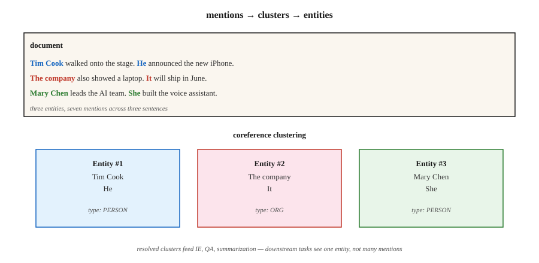

Home / NLP, Foundations to Advanced
Coreference Resolution
"She called him. He did not answer. The doctor was at lunch." Three references to two people and nobody is named. Coreference resolution figures out who is who.
- Type
- Learn
- Languages
- Python
- Prerequisites
- Phase 5 · 06 (NER), Phase 5 · 07 (POS & Parsing)
- Time
- ~60 minutes
#The Problem
Extract every mention of Apple Inc. from a 300-word article. Easy when the article says "Apple." Hard when it says "the company," "they," "Cupertino's technology giant," or "Jobs's firm." Without resolving these mentions to the same entity, your NER pipeline misses 60-80% of the mentions.
Coreference resolution links every expression that refers to the same real-world entity into one cluster. It is the glue between surface-level NLP (NER, parsing) and downstream semantics (IE, QA, summarization, KG).
Why it matters in 2026:
- Summarization: "The CEO announced..." vs "Tim Cook announced..." — the summary should name the CEO.
- Question answering: "Who did she call?" requires resolving "she."
- Information extraction: a knowledge graph with "PER1 founded Apple" and "Jobs founded Apple" as separate entries is wrong.
- Multi-document IE: merging mentions across articles about the same event is cross-document coreference.
#The Concept

The task. Input: a document. Output: a clustering of mentions (spans) where each cluster refers to one entity.
Mention types.
- Named entity. "Tim Cook"
- Nominal. "the CEO", "the company"
- Pronominal. "he", "she", "they", "it"
- Appositive. "Tim Cook, Apple's CEO,"
Architectures.
- Rule-based (Hobbs, 1978). Syntactic-tree-based pronoun resolution using grammar rules. Good baseline. Surprisingly hard to beat on pronouns.
- Mention-pair classifier. For every pair of mentions (m_i, m_j), predict whether they corefer. Cluster by transitive closure. Standard pre-2016.
- Mention-ranking. For each mention, rank candidate antecedents (including "no antecedent"). Pick the top.
- Span-based end-to-end (Lee et al., 2017). Transformer encoder. Enumerate all candidate spans up to a length cap. Predict mention scores. Predict antecedent-probability for each span. Cluster greedily. The modern default.
- Generative (2024+). Prompt an LLM: "List every pronoun in this text and its antecedent." Works well on easy cases, struggles on long documents and rare referents.
The evaluation metrics. Five standard metrics (MUC, B³, CEAF, BLANC, LEA) because no single metric captures clustering quality. Report the average of the first three as CoNLL F1. State-of-the-art in 2026 on CoNLL-2012: ~83 F1.
Known hard cases.
- Definite descriptions referring to entities introduced pages earlier.
- Bridging anaphora ("the wheels" → a previously mentioned car).
- Zero anaphora in languages like Chinese and Japanese.
- Cataphora (pronoun before referent): "When she walked in, Mary smiled."
#Build It
#Step 1: pretrained neural coreference (AllenNLP / spaCy-experimental)
import spacy
nlp = spacy.load("en_coreference_web_trf") # experimental model
doc = nlp("Apple announced new products. The company said they would ship soon.")
for cluster in doc._.coref_clusters:
print(cluster, "->", [m.text for m in cluster])On a longer document, you get something like:
- Cluster 1: [Apple, The company, they]
- Cluster 2: [new products]
#Step 2: rule-based pronoun resolver (teaching)
See code/main.py for a stdlib-only implementation:
- Extract mentions: named entities (capitalized spans), pronouns (dict lookup), definite descriptions ("the X").
- For each pronoun, look at the previous K mentions and score them by:
- gender/number agreement (heuristic)
- recency (closer wins)
- syntactic role (subjects preferred)
- Link the highest-scoring antecedent.
Not competitive with neural models. But it shows the search space and the decisions an end-to-end model must make.
#Step 3: using LLMs for coreference
prompt = f"""Text: {text}
List every pronoun and noun phrase that refers to a person or company.
Cluster them by what they refer to. Output JSON:
[{{"entity": "Apple", "mentions": ["Apple", "the company", "it"]}}, ...]
"""Two failure modes to watch. First, LLMs over-merge ("him" and "her" referring to two distinct people). Second, LLMs silently drop mentions in long documents. Always verify with span-offset checks.
#Step 4: evaluation
The standard conll-2012 script computes MUC, B³, CEAF-φ4 and reports the average. For an in-house eval, start with span-level precision and recall on your annotated test set, then add mention-linking F1.
#Pitfalls
- Singleton explosion. Some systems report every mention as its own cluster. B³ is lenient. MUC punishes this. Always check all three metrics.
- Pronouns in long context. Performance drops ~15 F1 on documents over 2,000 tokens. Chunk carefully.
- Gender assumptions. Hard-coded gender rules break on non-binary referents, organizations, animals. Use learned models or neutral scoring.
- LLM drift on long docs. A single API call cannot reliably cluster mentions across 50+ paragraphs. Use sliding-window + merge.
#Use It
The 2026 stack:
| Situation | Pick |
|---|---|
| English, single document | en_coreference_web_trf (spaCy-experimental) or AllenNLP neural coref |
| Multilingual | SpanBERT / XLM-R trained on OntoNotes or Multilingual CoNLL |
| Cross-document event coref | Specialized end-to-end models (2025–26 SOTA) |
| Quick LLM baseline | GPT-4o / Claude with structured-output coref prompt |
| Production dialog systems | Rule-based fallback + neural primary + manual review for critical slots |
The integration pattern that ships in 2026: run NER first, run coref, merge coref clusters into NER entities. Downstream tasks see one entity per cluster, not one entity per mention.
#Ship It
Save as outputs/skill-coref-picker.md:
---
name: coref-picker
description: Pick a coreference approach, evaluation plan, and integration strategy.
version: 1.0.0
phase: 5
lesson: 24
tags: [nlp, coref, information-extraction]
---
Given a use case (single-doc / multi-doc, domain, language), output:
1. Approach. Rule-based / neural span-based / LLM-prompted / hybrid. One-sentence reason.
2. Model. Named checkpoint if neural.
3. Integration. Order of operations: tokenize → NER → coref → downstream task.
4. Evaluation. CoNLL F1 (MUC + B³ + CEAF-φ4 average) on held-out set + manual cluster review on 20 documents.
Refuse LLM-only coref for documents over 2,000 tokens without sliding-window merge. Refuse any pipeline that runs coref without a mention-level precision-recall report. Flag gender-heuristic systems deployed in demographically diverse text.#Exercises
- Easy. Run the rule-based resolver in
code/main.pyon 5 hand-crafted paragraphs. Measure mention-link accuracy against ground truth. - Medium. Use a pretrained neural coref model on a news article. Compare clusters against your own manual annotation. Where did it fail?
- Hard. Build a coref-enhanced NER pipeline: NER first, then merge via coref clusters. Measure entity-coverage improvement vs NER-only on 100 articles.
#Key Terms
| Term | What people say | What it actually means |
|---|---|---|
| Mention | A reference | A span of text that refers to an entity (name, pronoun, noun phrase). |
| Antecedent | What "it" refers to | The earlier mention a later one corefers with. |
| Cluster | The entity's mentions | Set of mentions that all refer to the same real-world entity. |
| Anaphora | Backward reference | Later mention refers to earlier ("he" → "John"). |
| Cataphora | Forward reference | Earlier mention refers to later ("When he arrived, John..."). |
| Bridging | Implicit reference | "I bought a car. The wheels were bad." (wheels of THAT car.) |
| CoNLL F1 | The number on leaderboards | Average of MUC, B³, CEAF-φ4 F1 scores. |
#Further Reading
- Jurafsky & Martin, SLP3 Ch. 26 — Coreference Resolution and Entity Linking — canonical textbook chapter.
- Lee et al. (2017). End-to-end Neural Coreference Resolution — span-based end-to-end.
- Joshi et al. (2020). SpanBERT — pretraining that improves coref.
- Pradhan et al. (2012). CoNLL-2012 Shared Task — the benchmark.
- Hobbs (1978). Resolving Pronoun References — the rule-based classic.
Nice. That's 4 minutes of NLP, Foundations to Advanced behind you.
Continue to Entity Linking & Disambiguation →